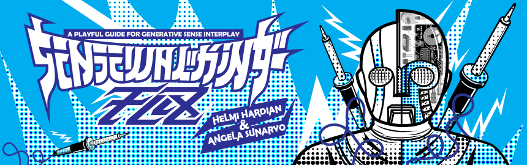
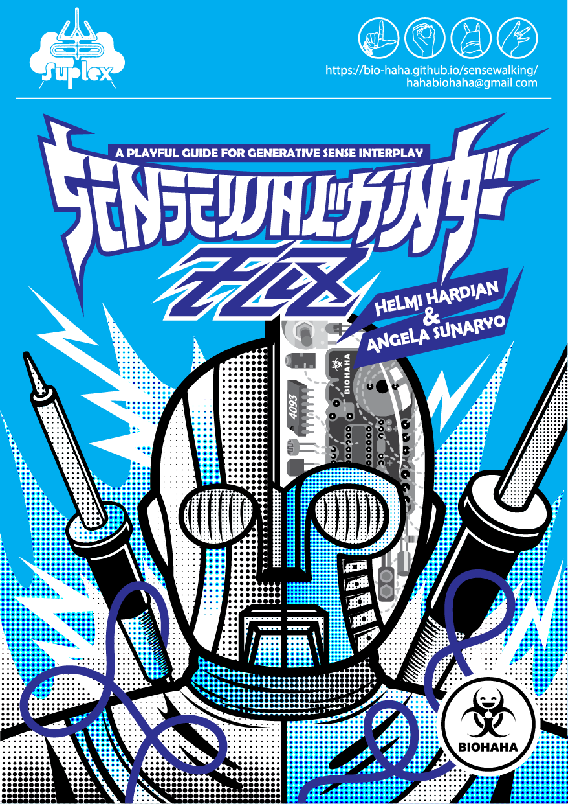
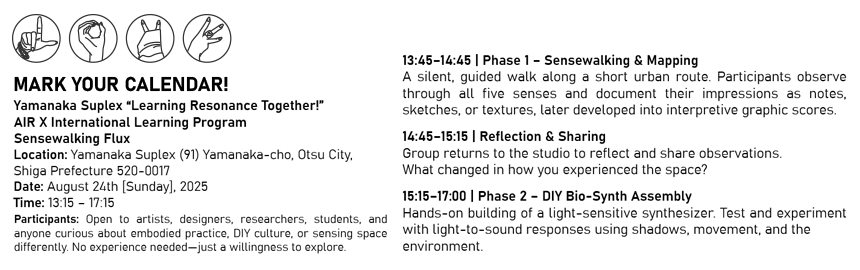
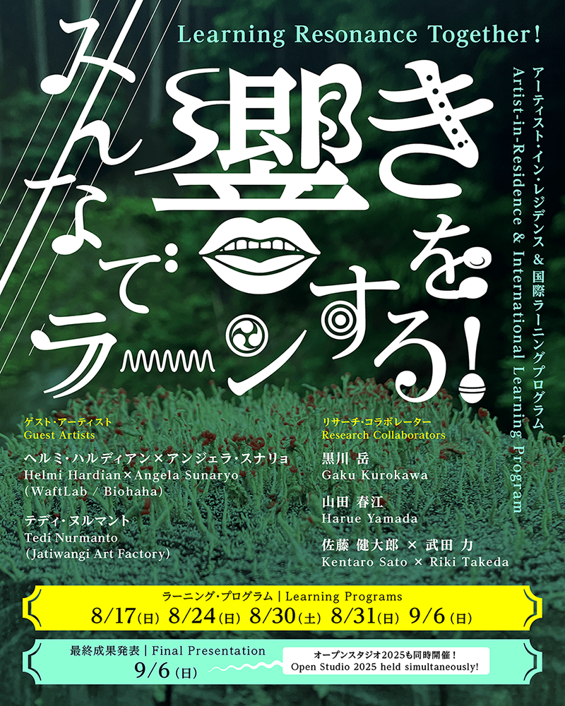
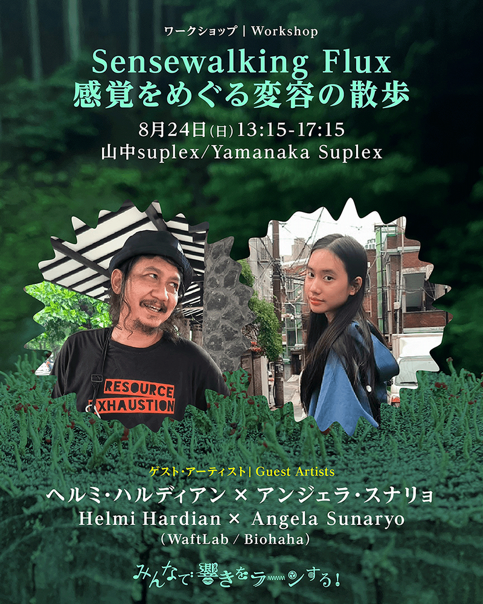
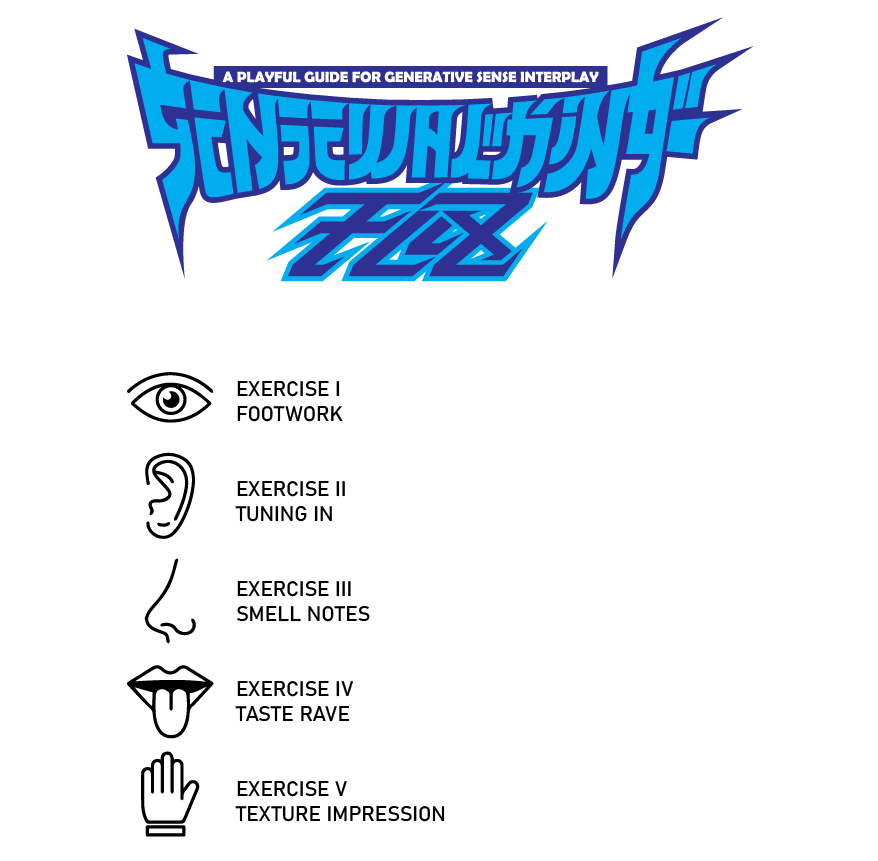
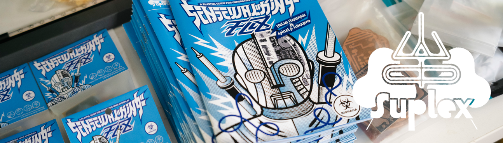
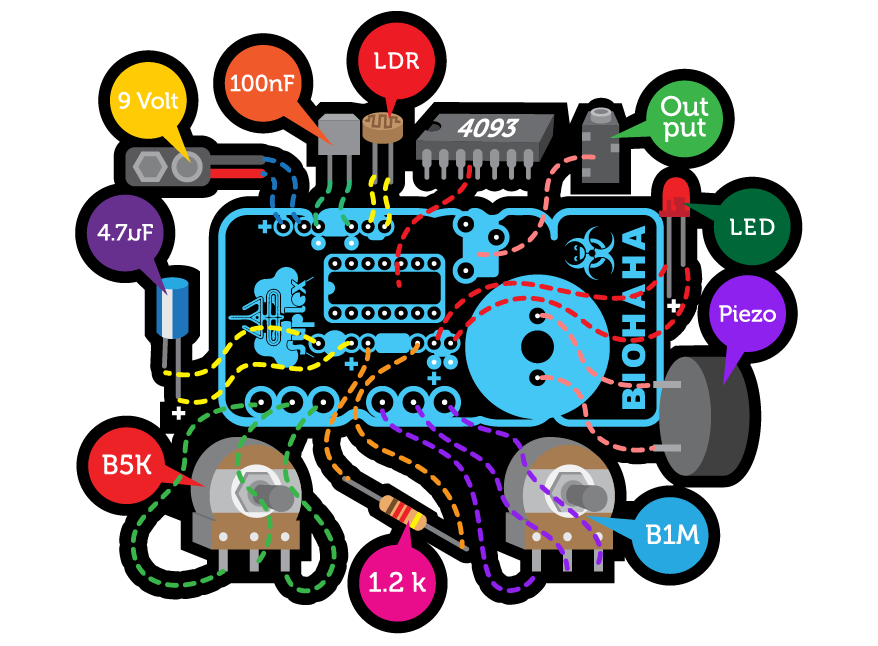
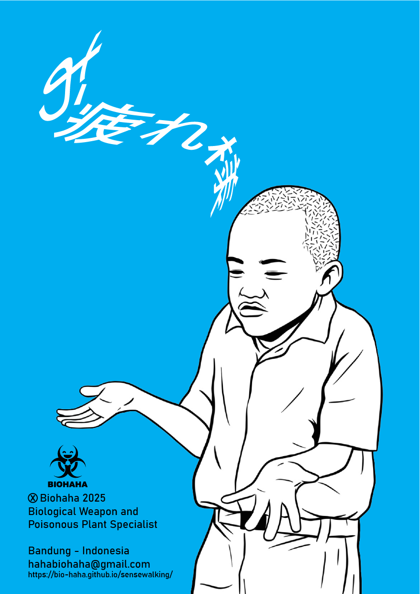

Sensewalking Flux invites you into a layered terrain of architecture, memory, and ecology. In this chapter, we shift from urban/coastal sites to the forested ridges of the Mount Hiei boundary between Kyoto and Shiga, where the studio‐community of Yamanaka Suplex is situated.
Here, the city’s edge gives way to mountain air, summer heat, and the slow rhythm of woods, trails and light. Participants were invited to walk the hillside, forest paths, and abandoned structures to sense the meeting of nature and collective ritual.
Each walk becomes a threshold, each workshop a clearing, each performance an echo of place.

Sensewalking Flux Zine - Yamanaka Suplex Download
This project unfolds in three phases:
// Sensewalking & Mapping – Participants explore Yamanaka Suplex area through embodied perception, documenting their experiences through sketches, sound patterns, textures, and bodily sensations. These observations are converted into a graphic score, capturing an intersubjective experience of the landscape.
// DIY Bio-Synth Workshop – Participants assemble a light-sensitive synthesizer, establishing a connection between visual stimuli and sound.
// Collective Audio-Visual Performance – The generated score serves as a guide for an improvised performance in public space, merging movement, sound, and visual projections into an intersubjective ecology between body, space, and technology.
This project highlights spontaneity, perception, and intersubjectivity, fostering an egalitarian interaction between the landscape and its inhabitants. By positioning the environment as a "living instrument," Sensewalking Flux celebrates the unpredictability that emerges from the ecotone between body, space, and technology.

Learning Resonance Together! - Yamanaka Suplex
2025年8月13日[水]〜9月13日 土]
アーティスト・イン・レジデンス × 国際ラーニングプログラム「みんなで響きをラーンする！」を開催
Learning Resonance Together! Artist-in-Residence - International Learning Program
Dates: Monday, August 12 – Sunday, September 14, 2025
Venue: Yamanaka Suplex (91 Yamanaka-cho, Otsu, Shiga Prefecture)
Organized by: Yamanaka Suplex
Curated by: Kaho Ikeda (Co-Program Director, Yamanaka Suplex)
Assistant: Seigo Hirano, Yukina Ayagi
Supported by: Fukutake Foundation, Toshiaki Ogasawara Memorial Foundation
Residency Period: August 13 (Mon) – September 13 (Sun), 2025
Yamanaka Suplex is based in Yamanaka-cho and Hieidaira, two districts in Otsu, Shiga Prefecture, where it serves as a crossroads of local culture and contemporary art. In Yamanaka-cho, traditional cultural elements such as the local bon dance “Yamanaka Goshu Ondo,” regional food customs, and historic stonework, including Buddhist statues and bridges from the Kamakura period still remain. However, many of these cultural assets are rapidly disappearing due to the aging of the local population, which has long been responsible for passing them down. A key challenge in the region is how to preserve and transmit these embodied forms of expression and collective memory to future generations. This project responds to that context by inviting artists from Indonesia who work at the intersection of music, folk performance, and local environmental resources, and who engage communities through their practice. Through field research and community-based workshops in and around Yamanaka Suplex, they will explore the cultural and environmental landscape of the region. In addition to international artists-in-residence, we will also welcome domestic artists and directors who focus on music and folk performing arts as “research collaborators.” These collaborators will also conduct workshops, creating opportunities for participants to engage with the region’s culture from multiple perspectives.

Learning Resonance Together! - Yamanaka Suplex
Schedule
● Workshops
Each artist-in-residence and research collaborator will conduct at least one workshop during the residency period.
● Final Presentation
Date: Saturday, September 6, 2025
Venue: Yamanaka Suplex
The final event will include:
● Artist talks by resident and collaborating artists
● Presentations of workshop outcomes
● Mini live performances and more

Learning Resonance Together! - Yamanaka Suplex
As part of our residency at Yamanaka Suplex, Biohaha conducted a Sensewalking Flux session exploring the embodied resonance between human, environment, and material. Through collective walking, listening, and sensing, participants traced the hidden rhythms of the surrounding landscape.
The process culminated in a shared performance—transforming sensory data into sound, gesture, and dialogue—reflecting Yamanaka Suplex’s spirit of learning resonance together.
During our residency at Yamanaka Suplex, biohaha expanded the Sensewalking Flux practice into a new terrain of resonance and collective attunement.

Guided by the site’s unique context and Yamanaka Suplex’s framework of learning resonance together, the group explored how perception can become a collaborative act. The walk evolved into a process of mapping invisible relations between human, environment, and biological material, each step generating data that later unfolded as a live performance and generative sound composition.

Through this shared process, biohaha continued its exploration of embodied navigation and living systems, situating Sensewalking Flux as both research and ritual within the ecology of Yamanaka Suplex’s artistic community.
What’s a Bio-Synth?
Think of it as a tiny electronic creature that listens to the world in ways we can’t. Instead of using a microphone, it captures light intensity and turns it into sound. The brighter the light, the louder or higher the pitch—kind of like the city humming its own tune!
Ready to tune in? Let’s build, explore, and make the city sing!

DIY Bio-Synth Instruction Manual
Phase 1
Sensewalking & Mapping
"Observing the environment around Yamanaka Suplex area through the senses—textures, movements, sounds, and the shifting rhythm of the landscape."
Yamanaka Suplex, Japan | 24 August 2025
Converting
"The observations result are converted into a graphic score, capturing an intersubjective experience of the landscape."
Yamanaka Suplex, Japan | 24 August 2025
Reflections on Phase 1
Sensewalking & Mapping
Yamanaka Suplex introduced a unique landscape shaped by both natural beauty and layers of local history. The workshop took place at Ceramic Hill, a site known for its past as an illegal dumping ground for ceramic waste. Even today, fragments of broken ceramics remain scattered across the terrain. Yamanaka itself sits between Kyoto and Shiga Prefectures, nestled in the mountains and surrounded by dense forest, giving the area a strong connection to nature.
Because of the intense summer heat, we prepared insect repellent and cooling sprays in advance to make the session comfortable for everyone. The participants were wonderfully diverse: children as young as three, seven, and ten years old with their parents, local residents, and fellow artists and curators. This wide range of ages and backgrounds brought a playful and curious energy to the workshop.
As we began exploring the hillside, the children were especially enthusiastic. One child became fascinated by a caterpillar, observing it closely as it moved across leaves. Another was intrigued by the scent of the ceramic fragments and described it as smelling like strawberries. Some participants collected wild plants, touching, smelling, and examining their textures. The environment offered many sensory layers: the crisp sound of ceramic shards crunching underfoot, the rustling of leaves, the calls of forest birds, and the steady cicada song that filled the air.
Many participants instinctively found their own quiet corners to focus, listen, and immerse themselves in the surroundings. Despite the heat, the session was lively, joyful, and filled with curiosity. We ended the workshop with something simple and delightful: sharing ice cream together, a cool pause that brought everyone into the same circle of enjoyment after an afternoon of sensory exploration.
Phase 2
DIY Bio-Synth Workshop
"Building, tweaking, and experimenting—participants shape sound through circuits and collaboration."
Following the sensewalking session, biohaha continued the process inside the shared studio of Yamanaka Suplex, transforming sensory traces into physical and sonic forms.
Using found materials, simple circuits, and organic matter, participants collaboratively assembled bio-synths—living sound instruments that translate environmental data and bodily signals into frequencies, rhythms, and pulses.
Each bio-synth became a small organism of resonance: a hybrid of biology and electronics, sensitivity and noise. The process emphasized open, low-tech experimentation—merging intuition, improvisation, and accessible tools to build instruments that could listen back to their surroundings.
Within the collective studio space, the assembly became both a workshop and a performance. Conversations, soldering sounds, and the quiet vibration of circuits merged into a shared rhythm, echoing Yamanaka Suplex’s ethos of learning resonance together.
Through this process, biohaha extended the Sensewalking Flux methodology beyond walking—into a material dialogue between bodies, matter, and sound.
Yamanaka Suplex - Japan | 24 August 2025
Reflections on Phase 2
DIY Bio-Synth Workshop
Phase 2 focused on hands-on making, where participants assembled simple light-sensitive synthesizers inspired by the sensory impressions they gathered during the walk. We began by introducing each component of the circuit, supported by a translator who helped bridge the language gap and keep the explanations clear for everyone involved. Because the group included very young children, many parents assisted their kids, though the children themselves were eager to try things independently whenever possible.
To make the process smoother and suitable for a multi-age group, many of the PCBs were designed to be solderless. This allowed participants to assemble the circuit quickly and safely while still understanding how each part worked. One older participant asked about the piezo speaker and why such a small element could produce sound. This opened a discussion about low-power audio components. Others were curious about the LDR sensor and whether using a larger version was possible. We explained that it was indeed possible, and could create interesting variations depending on the sensitivity and light range.
Once the assembly was complete, participants began testing and performing with their instruments. They used their hands, shadows, and graphic scores from Phase 1 to modulate the sound, creating playful rhythms and patterns. There were also funny moments along the way. One parent joked, with a mix of concern and amusement, that their child might grow up to become a noise artist after enjoying the synth so much. These lighthearted interactions added to the warmth of the session. By the end, the group had created a space filled with curiosity, creativity, and shared laughter, transforming the technical process into a fun and memorable experience for all ages.
Phase 3
Collective Audio-Visual Performance
"From scattered sounds to a shared composition—listening, responding, and making Yamanaka Suplex resonate."
The residency culminated in a participatory performance, where the assembled bio-synths, field recordings, and sensory notes from the walk converged into a collective sound experience.
Participants and visitors were invited to move through the space, touch, and interact with the instruments—activating subtle changes in tone, rhythm, and vibration. The performance unfolded as an open composition, guided by the spontaneous gestures and responses of those present.
Rather than presenting a fixed outcome, the session embodied the spirit of Sensewalking Flux: a continuous process of sensing, making, and resonating together.
Through this shared improvisation, the boundaries between performer, instrument, and audience dissolved—revealing sound as a living dialogue between human, environment, and the technologies that connect them.
Yamanaka Suplex - Japan | 24 August 2025
Reflections on Phase 3
Collective Audio-Visual Performance
In the final performance, we presented a short five-minute performance that brought together the sounds, stories, and sensory impressions gathered throughout the workshop and our residency in Yamanaka Suplex. The performance combined sampled taiko drum rhythms with samples of spoken Japanese like “Wasshoi!”, drawing inspiration from traditional pentatonic scales and the musical patterns we encountered during our time in the region. As our main improvisation instrument, we used the Suiko, an old Japanese poetry synthesizer we found at Hard Off, weaving its distinctive tones into the structure of the piece. The DIY bio-synths created during the workshop also became part of the improvisation, inviting spontaneity and inviting the audience to participate directly.
In this performance, we also carried out a gesture of solidarity. Responding to the difficult situation back home in Indonesia, we incorporated the themes of “Brave Pink” and “Heroic Green” into our stage decoration. These colors appeared in hand-painted cloth as a quiet message of hope, courage, and connection across distance. Inspired by the shimenawa ropes and traditional gates characteristic of the Shiga region, we created additional stage elements from natural materials found around Yamanaka, blending local symbols with our expression of solidarity.
Audience interaction became a highlight of the session. Several participants came on stage to try the DIY bio-synths themselves, exploring how light, shadow, and movement affected the sound. Their curiosity sparked small conversations about signal modulation, sensor behavior, and the playful nature of noise. The performance closed with warm applause, marking a joyful and heartfelt culmination of the three-phase workshop.

Credits:
Documentation: Biohaha, Yamanaka Suplex, Tomohiro Yamatsuki
Illustrations: Biohaha
Back Cover Illustration: Heri Subyantoro - @thegarapan